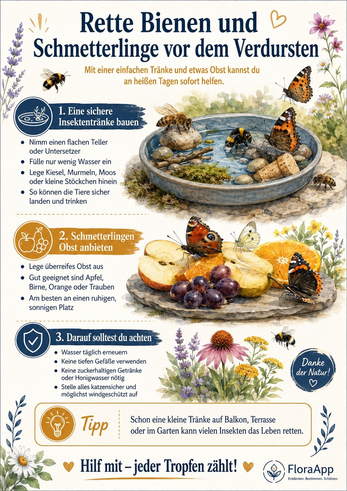

Natur vor der Haustür
An heißen, trockenen Tagen finden Insekten oft kein Wasser mehr. Mit einer einfachen Tränke und etwas überreifem Obst hilfst du Bienen, Hummeln und Schmetterlingen sofort – auf Balkon, Terrasse oder im Garten.

Zum Vergrößern antippen und mit zwei Fingern aufziehen.
Mehr zum Mitmachen
Was brauchen Insekten wirklich?Lebensräume erkennen – im Lernpfad mit Quiz Wo sind die Insekten geblieben?Warum es weniger werden – und was hilftHilf mit – jeder Tropfen zählt!
Wasser täglich erneuern.